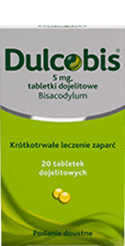
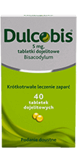
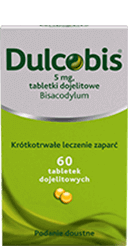
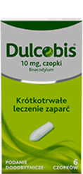

łagodne wsparciena dziecięce zaparcie
Naturalne uczucie ulgi
Współpracuje z organizmem, przynosząc przyjemną ulgę w zaparciach.1
Nie zmienia smaku napoju1
Neutralny smak - po prostu dodaj DulcoSoft do 150 ml Twojego ulubionego napoju, najlepiej rano.1
Praktycznie niewchłanialny przez organizm1
Wywiera swoje działanie w sposób czysto fizyczny: nie jest wchłaniany przez organizm oraz ulega wydaleniu wraz z kałem w postaci niezmienionej.1
Daje przewidywalny efekt1
Nie powoduje nagłego działania przeczyszczającego. Praktycznie nie daje uczucia nagłego parcia.1
Czy wiesz, że nawet co 3 dziecko cierpi z powodu zaparć?7
Objawy, jakie mogą towarzyszyć zaparciu u dziecka to:
-
ból brzucha,
-
wzdęcia,
-
unikanie toalety,
-
czy uczucie niepełnego wypróżnienia.8
Zaparcie u dziecka może powstać z przyczyn takich jak: gorączka, odwodnienie, błędy dietetyczne czy stres (zarówno w przedszkolu jak i w domu).9,10
Naturalne
uczucie
ulgi

Zawiera Makrogol 4000
Makrogol wykazuje wysoką zdolność do wiązania wody i opóźnia wchłanianie wody w jelitach, przez co ułatwia wypróżnienie.1
Poprawia komfort wypróżnień1
Dobrze tolerowany w leczeniu czynnościowych i przewlekłych zaparć u dzieci i dorosłych.3 Dodatkowo reguluje wypróżnienia do 1 na dobę.2
Łagodne działanie
Łagodnie i skutecznie przeciwdziała zaparciom i nieregularności wypróżnień.1 Zaczyna działać nawet po 24 godzinach.1
Przeznaczenie
Produkt dla całej rodziny. Odpowiedni dla dzieci powyżej 6. miesiąca życia i dla kobiet w ciąży oraz karmiących piersią.1
dawkowanie
Najlepiej w pojedynczej dawce przyjmowanej rano. Produkt można zmieszać z wybranym napojem, np. ze szklanką wody, soku owocowego lub herbaty (około 150 ml).1
skład
Dulcosoft Junior 100 ml
10 ml roztworu zawiera 5 mg makrogolu 40001
Rodzina produktów Dulco
| Typ Produktu |
|---|
| Właściwości |
| Składnik |
| Opakowanie |
|  |  |
duże opakowanie  |
 |
|---|---|---|---|
| Dulcobis | Dulcobis | Dulcobis | Dulcobis |
| Tabletki Lek bez recepty |
Tabletki Lek bez recepty |
Tabletki Lek bez recepty |
Czopki Lek bez recepty |
| Przynosi ulgę w zaparciach już po 6h4 | Szybka ulga w zaparciach już po 10 minutach5 | ||
| Bisakodyl | Bisakodyl | Bisakodyl | Bisakodyl |
| 20 tabletek | 40 tabletek | 60 tabletek | 6 czopków |
Jak radzić sobie z zaparciami?
Występowanie zaparć to dość częsty problem w społeczeństwie, na całym świecie cierpi na nie około 31% zdrowych osób dorosłych.11 Są powszechnym problemem również u dzieci, a ich częstość występowania szacuje się na 3% na całym świecie, z czego u 17% do 40% dzieci zaparcia zaczynają się w pierwszym roku życia.12 Niezależnie od grupy wiekowej, powodują dyskomfort i mogą mieć poważne konsekwencje dla zdrowia, dlatego należy działać nawet w przypadku sporadycznego pojawiania się problemu. Dowiedz się więcej co zrobić, aby zniwelować problem zaparć u siebie czy swojego dziecka.